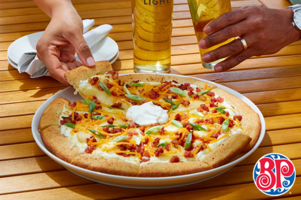
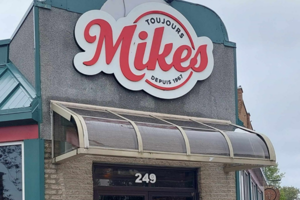
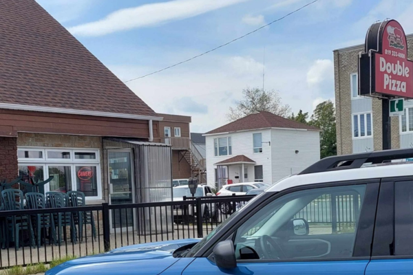
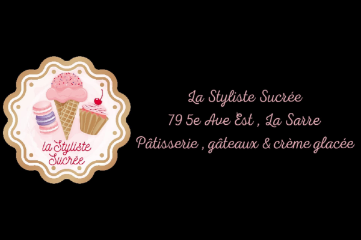
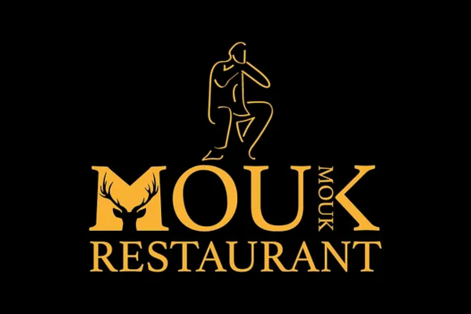
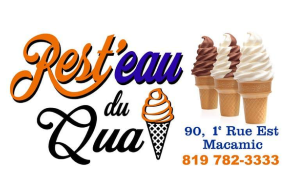
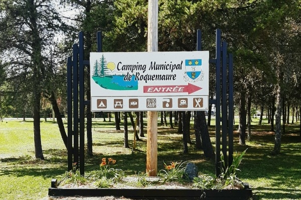
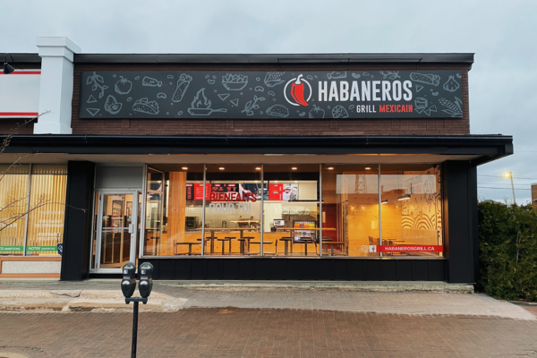

English
Nous joindre
Renseignements
Blogue
Entreprises
Menu
Quoi faire?
Où manger?
Où dormir?
Évènements
Le territoire
Accueil
Où manger?
Cliquez ici pour raffiner votre recherche
Où manger?
Bars
Restaurants
Retirer les filtres
Bar l'Alambic
Consulter les évènements
La Sarre

Boston Pizza
Consulter les évènements
La Sarre

Restaurant Toujours Mikes
Consulter les évènements
La Sarre
Brasserie La Brute du Coin
Consulter les évènements
La Sarre

Double Pizza
Consulter les évènements
La Sarre

La styliste Sucrée
Consulter les évènements
La Sarre
Restaurant Club de golf Duparquet
Consulter les évènements
Duparquet

Restaurant Le Mouk Mouk
Consulter les évènements
Duparquet

Rest'eau du Quai
Consulter les évènements
Macamic
Restaurant Au P'tit Bonheur
Consulter les évènements
Palmarolle

Restaurant du Camping municipal de Roquemaure
Consulter les évènements
Roquemaure
Restaurant Le Poste
Consulter les évènements
Val-Saint-Gilles
Motel Le Bivouac
Consulter les évènements
La Sarre
Cinéma Café La Sarre
Consulter les évènements
La Sarre

Habaneros Grill Mexicain
Consulter les évènements
La Sarre
 pour tout événement : retraite, soirée de famille, soirée de fête, Karaoké etc! Avec le Bar l'Alambic TOUT est possible!!
Nous avons une approche personnalisée et les employés sont là pour vous faire vivre une expérience unique !
Le Bar l'Alambic est l'univers de la dégustation en Abitibi-Ouest!
Au plaisir de s’y rencontrer!")


.png "Restaurant Au P'tit Bonheur : Le restaurant de Palmarolle est un endroit parfait pour déguster de bon petit plat réconfortant! Tels que de la poutine, une bonne soupe ou du poulet.
Nous vous invitons à aller faire un tour pour déguster leurs plats et par la même occasion faire de nouvelles connaissances . Le restaurant est situé au 175 rue Principal à Palmarolle et il est ouvert tous les jours, du lundi au dimanche.
Pour plus d’informations sur restaurant, appelez au 819-787-3777 ou visitez leur page Facebook")
 de 8h00am à 8h00pm.
Bienvenue à tous!")

.png "Cinéma Café La Sarre : Cinéma CAFÉ est le café spécialisé de La Sarre ouvert sur réservation seulement, offre des cafés de spécialité à base d'espresso: cappuccino, Frappuccino, latte, latte aromatisé avec vanille, caramel, noisette, chocolat en version sucré et zéro sucre! Une grande variété de thés en vrac de première | qualité vous sont offerts, entre eux les populaires matcha et chai en version thé au lait - latte-. Les cafés et thés peuvent être servis chauds ou froids.
Un menu de sandwich chauds avec fromage fondant est disponible en version panini: Caprese aux tomates, basilic et fromage, brie et canneberges, bœuf et | fromage suisse, porc barbecue, poulet César, entre autres spéciales du jour, accompagnés d'une soupe maison et d'un dessert conforment un repas complet| et délicieux.")